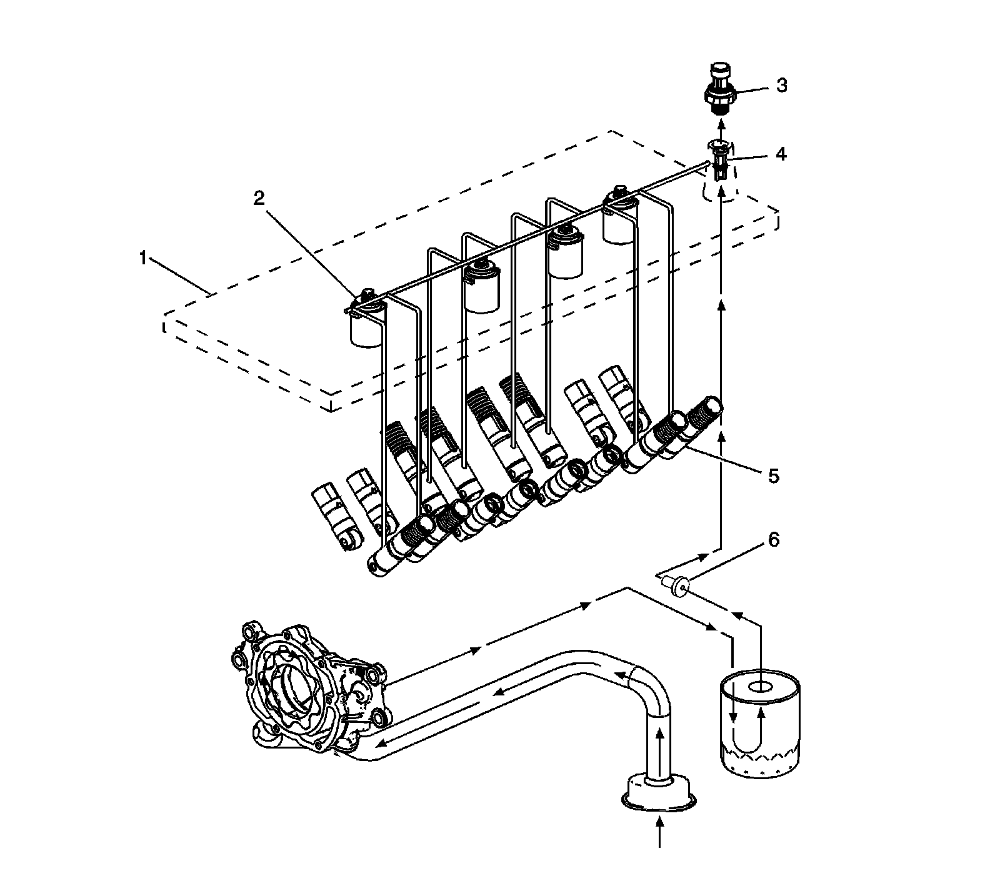
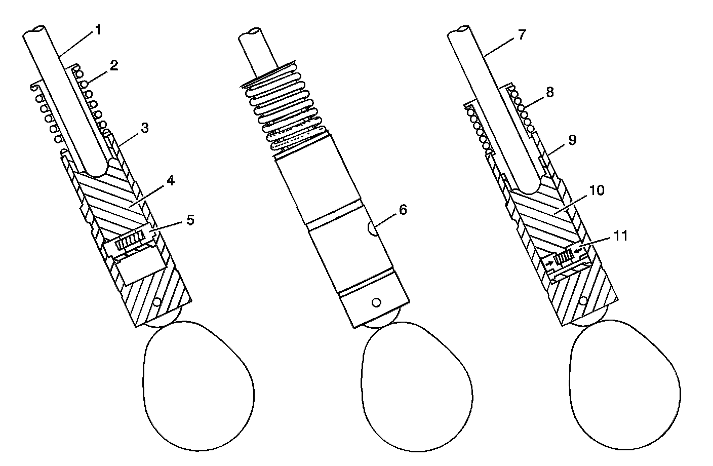
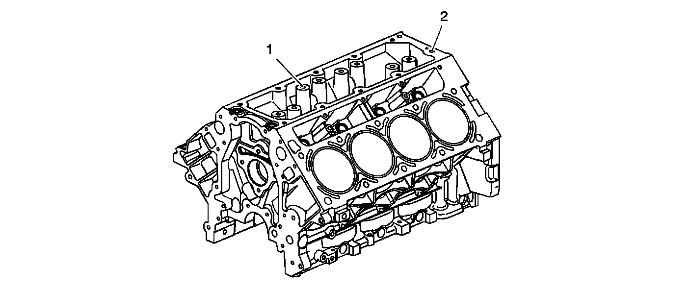

Cylinder Deactivation (Active Fuel Management) System Description
Cylinder Deactivation (Active Fuel Management) System Description
System Operation
General Motors Active Fuel Management engine control system has the ability, under certain light load driving conditions, to provide maximum fuel economy by deactivating 4 of the engines 8 cylinders. The engine will normally operate on 8 cylinders in V8 mode during starting, idling, and medium or heavy throttle conditions. When commanded ON, the engine control module (ECM) will direct the active fuel management system and deactivate cylinders 1 and 7 on the left bank and cylinders 4 and 6 on the right bank, forcing V4 mode. Refer to Lubrication Description and Cylinder Deactivation (Active Fuel Management) System Description.
Valve Lifter Oil Manifold Assembly

The valve lifter oil manifold assembly (1) is bolted to the top of the engine block beneath the intake manifold assembly. The oil manifold consists of 4 electrically operated and normally-closed solenoids (2). Each solenoid directs the flow of pressurized engine oil to the active fuel management intake and exhaust valve lifters (5). The active fuel management oil pressure relief valve (6), located in the oil pan, regulates engine oil pressure to the lubrication system and the oil manifold.
When enabling conditions are met for active fuel management operation, the ECM will ground each solenoid control circuit in firing order sequence, allowing current to flow through the solenoid windings. With the windings energized, the solenoid valves open and direct pressurized engine oil through the valve lifter oil manifold into 8 vertical passages in the engine block lifter valley. The 8 vertical passages, 2 per cylinder, direct pressurized oil to the valve lifter bores of the cylinders to be deactivated. When vehicle operating conditions require a return to V8 mode, the ECM will turn OFF the ground circuit for the solenoids, allowing the solenoid valves to close. When the solenoid valves are closed, remaining oil pressure is exhausted through the bleed passages of the valve lifter oil manifold into the engine block lifter valley. The housing of the oil manifold incorporates several oil bleed passages that continually purge trapped air from the manifold and engine block.
To help control contamination within the active fuel management hydraulic system, a small replaceable oil filter (4) is located in the valve lifter oil manifold oil inlet passage. The oil pressure sensor (3) monitors engine oil pressure and provides information to the ECM.
Active Fuel Management Valve Lifters

When operating in V8 mode, the active fuel management valve lifters function similar to the non-active fuel management valve lifters. The active fuel management oil manifold solenoids are in the closed position, with no pressurized oil directed to the valve lifters. The pushrod (1) travels upward and downward to actuate the rocker arm and valve. The spring loaded locking pins (5) of the lifter are extended outward and mechanically lock the pin housing (4) to the outer body of the valve lifter (3).
When the active fuel management system is commanded ON, the ECM will direct the solenoids of the oil manifold to open and direct pressurized oil to the valve lifters. Oil travels through the valve lifter oil manifold and engine block oil galleries and enters the inlet port (6) of the valve lifter.
When operating in V4 mode, pressurized oil forces the locking pins (11) inward. The pushrod (7) remains in a constant position and does not travel upward and downward. The outer body of the lifter (9) moves upward and downward independently from the pin housing (10). The valve lifter spring (8) retains tension on the valve train components to eliminate valve train noise.
When the active fuel management system is commanded OFF, the ECM directs the solenoids of the oil manifold to close, stopping the flow of pressurized oil to the valve lifters. The oil pressure within the lifter will decrease and the locking pins will move outward to mechanically lock the pin housing and outer body.
Engine Block

The active fuel management engine block incorporates additional features to support active fuel management system operation. Engine oil pressure is routed to the valve lifter oil manifold assembly from an oil gallery (2) in the rear of the cylinder block. Cylinders 1, 4, 6, and 7 each have 2 vertical, cast-in-block oil passages (1). The vertical oil passages permit oil flow from the manifold assembly to the valve lifter bores.
Engine Control Module (ECM)
Refer to Cylinder Deactivation (Active Fuel Management) System Description.